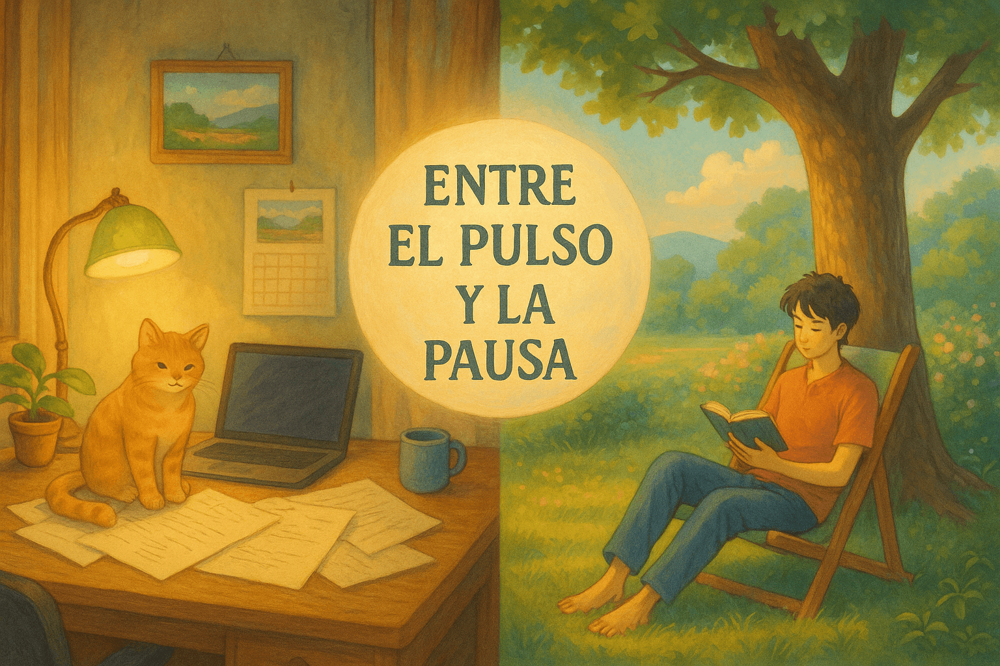

Entre el pulso y la pausa: Redefiniendo el éxito desde lo humano
Fecha de publicación: 11 de Mayo de 2025
Una reflexión sobre cómo encontrar un equilibrio más humano y sostenible en nuestra búsqueda del éxito, yendo más allá de las métricas tradicionales.
Leer más →
